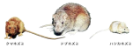

2025年
問題175 クマネズミの成獣に関する次の記述のうち，最も不適当なものはどれか．
（1）東南アジアが原産地で，森林内で樹上生活を行っていた．
（2）尾は体長より短い．
（3）ドブネズミと比較して警戒心が強く，毒餌をなかなか食べない．
（4）巣は天井裏や壁の内部等，屋内に多い．
（5）耳は大きく，折り返すと目を覆う．
2025年
問題175 正解（2） 頻出度AAA
クマネズミの尾長は体長よりも長く，頭胴長の約1.1倍程ある．
建築物内に定着する，クマネズミ，ドブネズミ，ハツカネズミの3種を住家性ネズミ（家ねずみ）という（2025-175-1図参照）．
2025-175-1図 左からクマネズミ，ドブネズミ，ハツカネズミ

出典 名古屋市
https://www.city.nagoya.jp/kenkofukushi/page/0000011677.html
北海道，東北，四国を除いてクマネズミが優占しており，特に都心の大形の建築物では，ほぼクマネズミとなっている．
ハツカネズミは農村や港湾地域に分布しており，建築物では少ない．
ネズミの糞からは，食中毒の原因となる病原体が検出されることがあり，ネズミはぺストやサルモネラ症等の病原体を媒介する他，電気設備に触れて起きる停電事故や，ケーブルをかじってコンピュータの誤作動や火災 の原因になる等，様々な被害を引き起こす．
1．クマネズミ
1）都心の大形ビルではクマネズミが優占種である．
2）もともと東南アジアが原産で，森林内で樹上生活をしていたので，運動能力に優れパイプ，電線を伝ったり垂直行動が得意で，いたるところから侵入する．天井，はりなど建物の比較的高層部分まで生息する．巣は天井裏や壁内部など，屋内に作ることが多い．
3）クマネズミは動物性の餌も食べるが植食性が強い．
4）大きさは，頭胴長（頭から尾の付け根までの長さ）が，成獣で 15～23cm，体重は，大体 100～200g である．形態的な特徴は，耳が大きく，折り返すと目を覆うほどで，尾長は体長よりも長く，頭胴長の約 1.1 倍程
である．背面が黒褐色で，腹面はやや黄褐色のものが多い．
5）クマネズミはドブネズミと比べて警戒心が強く，毒餌をなかなか食べず，粘着トラップにもかからず，防
除が困難である．
2.ドブネズミ
1）ドブネズミは比較的平面的な活動をするので，地下やちゅう房，低層階に多い．ビルの周囲の植栽の土壌などに穴を掘って巣としている．
2）ドブネズミは泳ぐことが得意で排水溝が最も重要な侵入場所である．水洗便所から侵入することもある．
3）ドブネズミの食性は雑食性であるが，動物蛋白を好む．
4）ドブネズミの大きさは，頭胴長が成獣で 22～26cm，尾長は体長よりもやや短い(体長の 0.7～0.9 倍)．体重は，成獣で 200～500g 程度，最大のもので 500g を超す．耳は小さく肉厚で，倒しても目まで届かない．毛色は，基本的に背面が褐色，腹面が白色であるが，全身黒色等に変化したものも多い．
5）性格は獰猛(どうもう)であるが警戒心が弱いため，防除は比較的やりやすい．
3．ハツカネズミ
1）農村で優占種であるハツカネズミの土生息地は畑地とその周辺地域や港湾地域であるが，秋から冬にかけてビル内にも侵入する．ビルでは局所的な分布で，生息数はドブネズミやクマネズミより少ない．行動範囲も小さい．
2）種子食性である．
3）これら住家性ネズミ3種の中では最も小形で，頭胴長が，成獣で 6～9cm，尾長は体長よりやや短い程度（体長の 0.9～1.0 倍），体重は成獣で約10～20gである．耳が大きくハツカネズミ特有の臭いを有する．
4）ハツカネズミはドブネズミと違って，水気のない環境下でも長期間生存できる．
5）好奇心が旺盛でトラップにはかかりやすいが，殺鼠剤には強い．